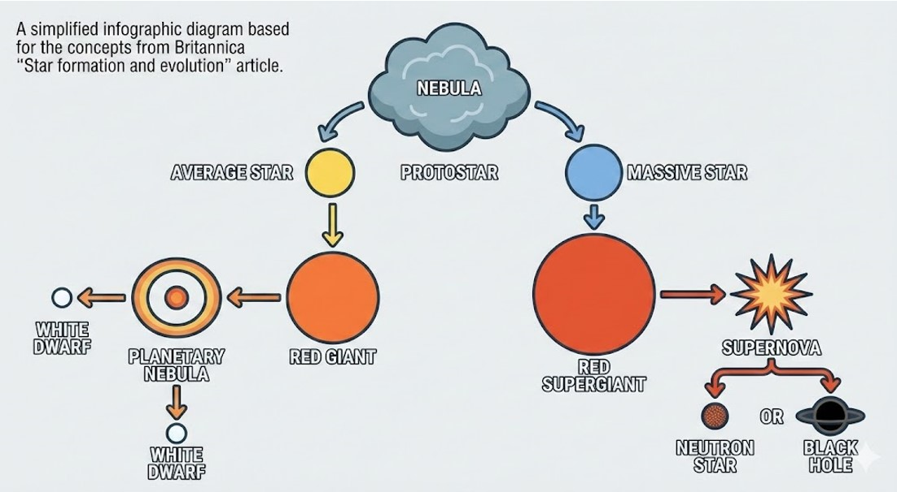

.png)
Sucked In - Pseudoscience in Blackholes
Busting the Myths – What does science really say?
In light of these theatrical interpretations, the next section aims to clarify what science can definitively say about blackholes, including what they are and how they function.
- A black hole is formed due to the collapse of a massive star, usually 20–25 times the mass of our Sun.
- Stars exist in their main sequence when the outward pressure from burning fuel like hydrogen and helium balances the inward pressure of gravity.
- The fusion process forms heavier elements from this hydrogen and helium.
- The process continues until the core is mostly iron, which cannot be burned to produce energy.
- When this fuel runs out, a supermassive star collapses, with the outer layers colliding together and rebounding in what is called a supernova.
- However, the core of the star remains and, if it is upwards of three solar masses, it forms a black hole.
- The collapsing mass forms a singularity of infinite density with a Schwarzschild radius — a boundary where gravity is so strong that not even light can escape. This is what gives black holes their name.
- When scientists say a black hole “infinitely curves” spacetime, they are referring to this singularity.
- The theory of General Relativity dictates that all mass curves spacetime, no matter how small. That is why we feel gravity here on Earth; the Earth curves spacetime and we feel the effect.
- However, at the singularity, the curvature becomes infinite, meaning our current understanding of physics breaks down.
- Curving spacetime can be more easily understood by imagining a two-dimensional sheet deforming under the weight of a small mass. The simulation below should help explain this.

Illustration showing the formation of a black hole from the collapse of a massive star.
2D Spacetime Warp
This interactive simulation visualises spacetime curvature caused by a massive object. The grid represents the fabric of spacetime, and the central depression illustrates how mass warps that fabric. Objects moving across the grid follow curved paths not because a force is pulling them in the traditional sense, but because spacetime itself is curved.
Examples of misinformation
Explore three examples of websites that employ the use of misleading headlines for clicks.
Learn more